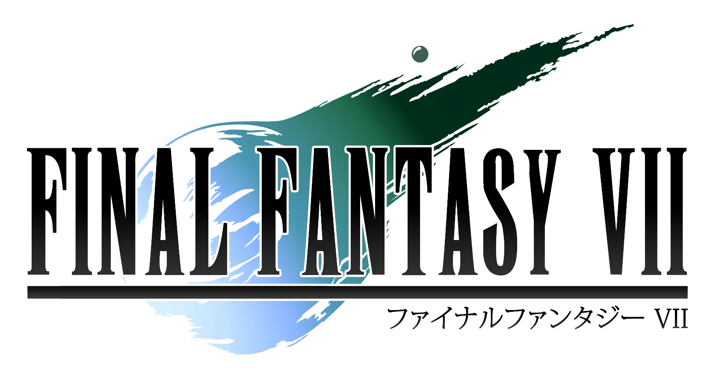
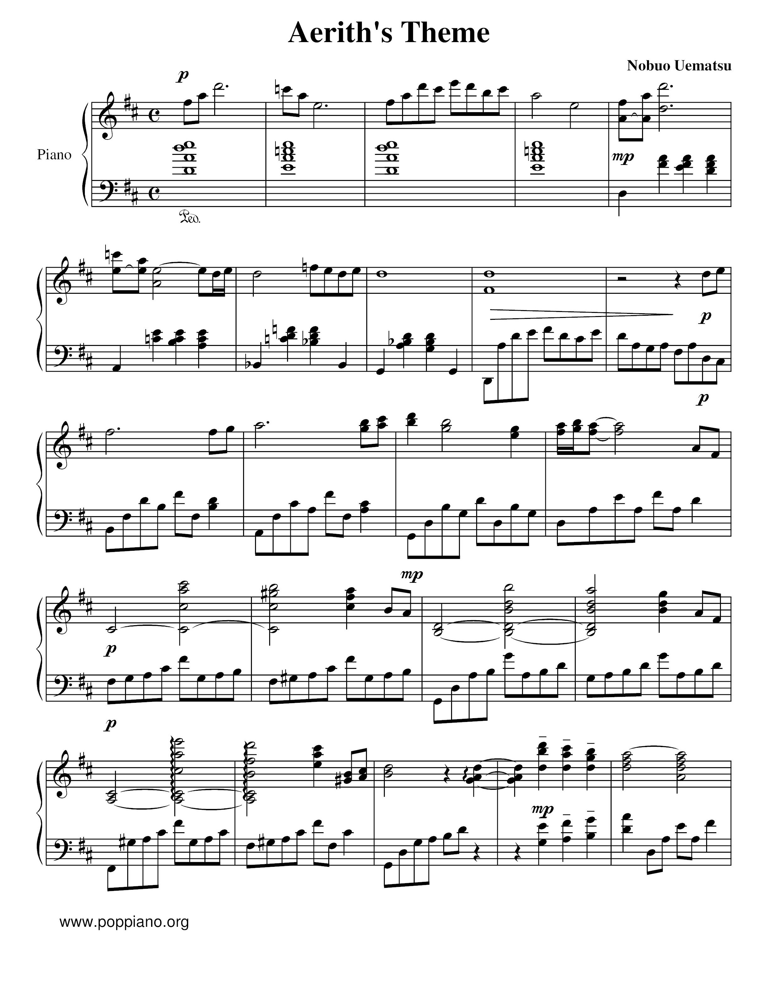
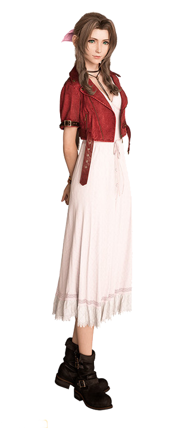
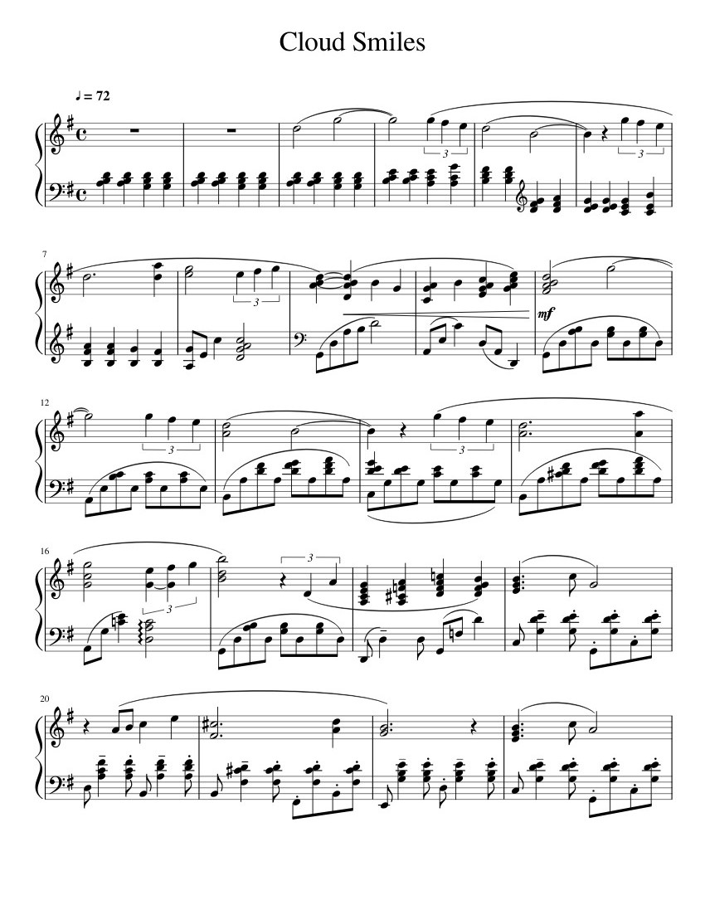
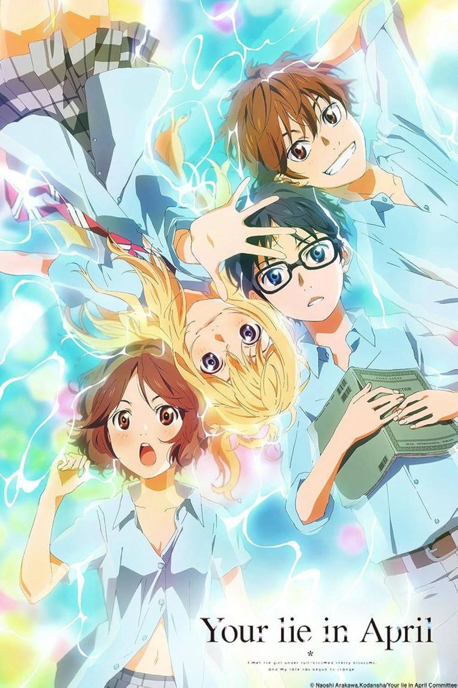
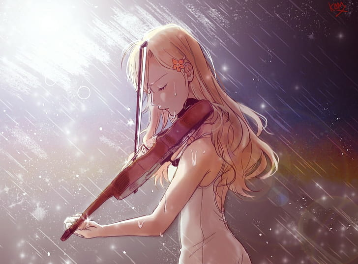

Music & Piano
The Score
Reimagined
Final Fantasy tributes · Classical · Original arrangements
The Passion
Piano as a Second Language
Music came first — before code, before engineering. Classical training from a young age, culminating in First Place at the VNU College Pianist Contest. The piano taught me discipline, patience, and the truth that mastery is built one note at a time.
Final Fantasy arrived at the right moment. Nobuo Uematsu's melodies didn't just accompany a story — they were the story. Notes that carried weight, melody that held memory. That's why Chopin and Uematsu sit naturally side by side in my repertoire.
The same discipline that makes a Chopin étude clean makes a production deployment reliable. Code and music share the same soul: pattern, expression, and the relentless pursuit of something beautiful.

Selected Performances

CHOPIN
Ballade No. 1 in G Minor, Op. 23
Chopin's first ballade — a sweeping, emotionally charged work that moves from turbulent darkness to triumphant resolution. A cornerstone of the Romantic piano repertoire.


FINAL FANTASY VII — UMEMATSU
Aerith's Theme
The most iconic melody in Final Fantasy VII — a piece about beauty, loss, and memory. Arranged for solo piano to capture the full emotional weight of Uematsu's original orchestration.

FINAL FANTASY VII — UMEMATSU
Cloud Smiles
An original piano arrangement drawing from Final Fantasy VII's quieter moments — the reflection, the smile between battles, the humanity beneath the soldier exterior.
Things I Love



Want to Hear More?
Check out my software projects, or get in touch to collaborate.